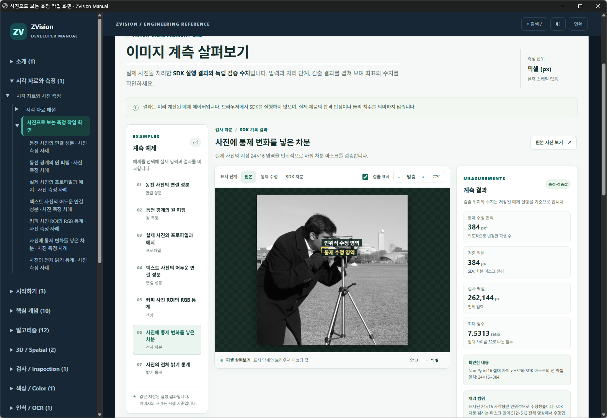
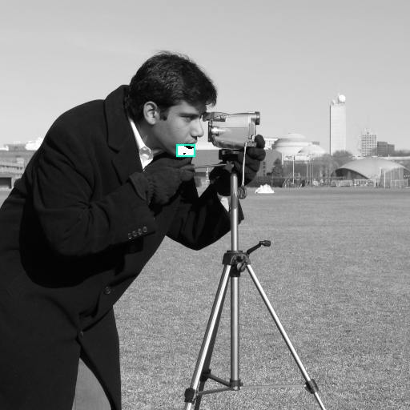

사진에 통제 변화를 넣은 차분
실제 사진의 지정 24×16 영역을 인위적으로 바꿔 차분 마스크를 검증합니다.





측정 결과와 단위
| 측정값 | 결과 | 단위 | 해석 |
|---|---|---|---|
| 통제 수정 면적 | 384 | px² | 의도적으로 변경한 픽셀 수 |
| 검출 픽셀 | 384 | px | SDK 차분 마스크 전경 |
| 검사 픽셀 | 262144 | px | 전체 입력 |
| 최대 점수 | 7.53125 | ratio | 절대 차이를 32로 나눈 점수 |
처리 순서
- 통제 수정 ·
NumPy 조건부 반전명시된 24×16 영역만 0 또는 255로 바꾼 합성 결함입니다. - SDK 차분 ·
ZImage.inspection_difference보정 없음, 절댓값 및 한계 32를 사용합니다. - 결과 위치 ·
SDK 마스크 / 독립 픽셀 비교삽입 영역과 검출 마스크를 비교합니다.
표시 영역과 실제 처리 범위
표시된 24×16 사각형만 인위적으로 수정했습니다. SDK 차분 검사는 마스크 없이 512×512 전체 영상에서 수행합니다.
인위적 수정 영역: x=220, y=180, 폭=24, 높이=16 px. 이 사각형의 의미와 실제 연산 범위는 위 설명을 따릅니다.
파라미터
- threshold = 32
- 원시 밝기 허용치
- correction = NONE
- 전역 밝기 보정 없음
- injected_region = (220, 180, 24, 16)
- 인위적 변화; 실제 결함 아님
어떻게 검증했는가
NumPy int16 절대 차이 >=32와 SDK 마스크의 전 픽셀 일치; 24×16=384
사진과 결과를 해석할 때
공개 예제 사진을 입력으로 사용한 재현 예시입니다. 사용자 생산 영상이 아닙니다.
길이와 면적은 픽셀 및 픽셀 제곱입니다. 실제 치수·장비 정확도·생산 합격 판정이 아닙니다.
사진의 원본 데이터 설명과 사용 조건 · Lav Varshney · CC0
API와 직접 살펴보기
관련 API
| 언어 | 종류 | 공개 심볼 | 형식 | 설명 |
|---|---|---|---|---|
| C# | 필드 | DifferenceInfo.Bias | readonly System.Double Bias | 보정 잔차에 더한 편향입니다. |
| C# | 구조체 | DifferenceInfo | | 차분에 적용된 보정과 선택 픽셀의 점수 통계입니다. |
| C# | 메서드 | DifferenceInfo.Equals | System.Boolean Equals(System.Object obj) | 설명 미제공 |
| C# | 메서드 | DifferenceInfo.Equals | static System.Boolean Equals(System.Object objA, System.Object objB) | 설명 미제공 |
| C# | 필드 | DifferenceInfo.Gain | readonly System.Double Gain | 보정 잔차의 source에 적용한 배율입니다. |
| C# | 메서드 | DifferenceInfo.GetHashCode | System.Int32 GetHashCode() | 설명 미제공 |
| C# | 메서드 | DifferenceInfo.GetType | System.Type GetType() | 설명 미제공 |
| C# | 필드 | DifferenceInfo.InspectedCount | readonly System.UInt64 InspectedCount | 포함 마스크에서 선택된 검사 픽셀 수입니다. |
| C# | 필드 | DifferenceInfo.MaxScore | readonly System.Double MaxScore | 선택 검사 픽셀의 최대 차분 점수입니다. |
| C# | 필드 | DifferenceInfo.MeanScore | readonly System.Double MeanScore | 선택 검사 픽셀의 평균 차분 점수입니다. |
| C# | 메서드 | DifferenceInfo.ReferenceEquals | static System.Boolean ReferenceEquals(System.Object objA, System.Object objB) | 설명 미제공 |
| C# | 메서드 | DifferenceInfo.ToString | System.String ToString() | 설명 미제공 |
| C# | 생성자 | DifferenceSpec..ctor | DifferenceSpec(System.Double threshold, ZVision.PhotometricCorrection correction = ZVision.PhotometricCorrection.None, ZVision.DifferencePolarity polarity = ZVision.DifferencePolarity.Absolute, System.UInt64 textureKernel = 1, System.Double textureWeight = 0) | 밝기 보정과 질감 허용치를 적용하는 차분 조건입니다. |
| C# | 필드 | DifferenceSpec.Correction | readonly ZVision.PhotometricCorrection Correction | 차분 전에 사용할 밝기 보정 방식입니다. |
| C# | 구조체 | DifferenceSpec | | 밝기 보정과 질감 허용치를 적용하는 차분 조건입니다. |
| C# | 메서드 | DifferenceSpec.Equals | System.Boolean Equals(System.Object obj) | 설명 미제공 |
| C# | 메서드 | DifferenceSpec.Equals | static System.Boolean Equals(System.Object objA, System.Object objB) | 설명 미제공 |
| C# | 메서드 | DifferenceSpec.GetHashCode | System.Int32 GetHashCode() | 설명 미제공 |
| C# | 메서드 | DifferenceSpec.GetType | System.Type GetType() | 설명 미제공 |
| C# | 필드 | DifferenceSpec.Polarity | readonly ZVision.DifferencePolarity Polarity | 점수 계산에 사용할 잔차 극성입니다. |
| C# | 메서드 | DifferenceSpec.ReferenceEquals | static System.Boolean ReferenceEquals(System.Object objA, System.Object objB) | 설명 미제공 |
| C# | 필드 | DifferenceSpec.TextureKernel | readonly System.UInt64 TextureKernel | 국소 표준편차를 구할 양의 홀수 커널 폭입니다. |
| C# | 필드 | DifferenceSpec.TextureWeight | readonly System.Double TextureWeight | 국소 표준편차에 곱할 유한한 0 이상의 가중치입니다. |
| C# | 필드 | DifferenceSpec.Threshold | readonly System.Double Threshold | 양의 유한한 기본 차분 허용치로 원시 밝기 단위입니다. |
| C# | 메서드 | DifferenceSpec.ToString | System.String ToString() | 설명 미제공 |
| C# | 메서드 | PhotometricCorrection.CompareTo | System.Int32 CompareTo(System.Object target) | 설명 미제공 |
| C# | 메서드 | PhotometricCorrection.Equals | System.Boolean Equals(System.Object obj) | 설명 미제공 |
| C# | 메서드 | PhotometricCorrection.Equals | static System.Boolean Equals(System.Object objA, System.Object objB) | 설명 미제공 |
| C# | 메서드 | PhotometricCorrection.Format | static System.String Format(System.Type enumType, System.Object value, System.String format) | 설명 미제공 |
| C# | 열거값 | PhotometricCorrection.GainOffset | GainOffset = 2 | 선택 픽셀의 선형 회귀로 배율과 편향을 보정합니다. |
| C# | 메서드 | PhotometricCorrection.GetHashCode | System.Int32 GetHashCode() | 설명 미제공 |
| C# | 메서드 | PhotometricCorrection.GetName | static System.String GetName<TEnum>(TEnum value) | 설명 미제공 |
| C# | 메서드 | PhotometricCorrection.GetName | static System.String GetName(System.Type enumType, System.Object value) | 설명 미제공 |
| C# | 메서드 | PhotometricCorrection.GetNames | static System.String[] GetNames<TEnum>() | 설명 미제공 |
| C# | 메서드 | PhotometricCorrection.GetNames | static System.String[] GetNames(System.Type enumType) | 설명 미제공 |
| C# | 메서드 | PhotometricCorrection.GetType | System.Type GetType() | 설명 미제공 |
| C# | 메서드 | PhotometricCorrection.GetTypeCode | System.TypeCode GetTypeCode() | 설명 미제공 |
| C# | 메서드 | PhotometricCorrection.GetUnderlyingType | static System.Type GetUnderlyingType(System.Type enumType) | 설명 미제공 |
| C# | 메서드 | PhotometricCorrection.GetValues | static TEnum[] GetValues<TEnum>() | 설명 미제공 |
| C# | 메서드 | PhotometricCorrection.GetValues | static System.Array GetValues(System.Type enumType) | 설명 미제공 |
| C# | 메서드 | PhotometricCorrection.GetValuesAsUnderlyingType | static System.Array GetValuesAsUnderlyingType<TEnum>() | 설명 미제공 |
| C# | 메서드 | PhotometricCorrection.GetValuesAsUnderlyingType | static System.Array GetValuesAsUnderlyingType(System.Type enumType) | 설명 미제공 |
| C# | 메서드 | PhotometricCorrection.HasFlag | System.Boolean HasFlag(System.Enum flag) | 설명 미제공 |
| C# | 메서드 | PhotometricCorrection.IsDefined | static System.Boolean IsDefined<TEnum>(TEnum value) | 설명 미제공 |
| C# | 메서드 | PhotometricCorrection.IsDefined | static System.Boolean IsDefined(System.Type enumType, System.Object value) | 설명 미제공 |
| C# | 열거값 | PhotometricCorrection.None | None = 0 | 밝기 보정을 적용하지 않습니다. |
| C# | 열거값 | PhotometricCorrection.Offset | Offset = 1 | 선택 픽셀 평균 차이로 편향을 보정합니다. |
| C# | 메서드 | PhotometricCorrection.Parse | static System.Object Parse(System.Type enumType, System.ReadOnlySpan<System.Char> value, System.Boolean ignoreCase) | 설명 미제공 |
| C# | 메서드 | PhotometricCorrection.Parse | static TEnum Parse<TEnum>(System.String value, System.Boolean ignoreCase) | 설명 미제공 |
| C# | 메서드 | PhotometricCorrection.Parse | static System.Object Parse(System.Type enumType, System.String value, System.Boolean ignoreCase) | 설명 미제공 |
| C# | 메서드 | PhotometricCorrection.Parse | static TEnum Parse<TEnum>(System.ReadOnlySpan<System.Char> value, System.Boolean ignoreCase) | 설명 미제공 |
| C# | 메서드 | PhotometricCorrection.Parse | static System.Object Parse(System.Type enumType, System.String value) | 설명 미제공 |
| C# | 메서드 | PhotometricCorrection.Parse | static System.Object Parse(System.Type enumType, System.ReadOnlySpan<System.Char> value) | 설명 미제공 |
| C# | 메서드 | PhotometricCorrection.Parse | static TEnum Parse<TEnum>(System.String value) | 설명 미제공 |
| C# | 메서드 | PhotometricCorrection.Parse | static TEnum Parse<TEnum>(System.ReadOnlySpan<System.Char> value) | 설명 미제공 |
| C# | 열거형 | PhotometricCorrection | | 차분 전에 적용하는 밝기 보정 방식입니다. |
| C# | 메서드 | PhotometricCorrection.ReferenceEquals | static System.Boolean ReferenceEquals(System.Object objA, System.Object objB) | 설명 미제공 |
| C# | 메서드 | PhotometricCorrection.ToObject | static System.Object ToObject(System.Type enumType, System.Object value) | 설명 미제공 |
| C# | 메서드 | PhotometricCorrection.ToObject | static System.Object ToObject(System.Type enumType, System.Int32 value) | 설명 미제공 |
| C# | 메서드 | PhotometricCorrection.ToObject | static System.Object ToObject(System.Type enumType, System.UInt16 value) | 설명 미제공 |
| C# | 메서드 | PhotometricCorrection.ToObject | static System.Object ToObject(System.Type enumType, System.UInt32 value) | 설명 미제공 |
| C# | 메서드 | PhotometricCorrection.ToObject | static System.Object ToObject(System.Type enumType, System.Int16 value) | 설명 미제공 |
| C# | 메서드 | PhotometricCorrection.ToObject | static System.Object ToObject(System.Type enumType, System.UInt64 value) | 설명 미제공 |
| C# | 메서드 | PhotometricCorrection.ToObject | static System.Object ToObject(System.Type enumType, System.Byte value) | 설명 미제공 |
| C# | 메서드 | PhotometricCorrection.ToObject | static System.Object ToObject(System.Type enumType, System.SByte value) | 설명 미제공 |
| C# | 메서드 | PhotometricCorrection.ToObject | static System.Object ToObject(System.Type enumType, System.Int64 value) | 설명 미제공 |
| C# | 메서드 | PhotometricCorrection.ToString | System.String ToString(System.String format) | 설명 미제공 |
| C# | 메서드 | PhotometricCorrection.ToString | System.String ToString(System.String format, System.IFormatProvider provider) | 설명 미제공 |
| C# | 메서드 | PhotometricCorrection.ToString | System.String ToString(System.IFormatProvider provider) | 설명 미제공 |
| C# | 메서드 | PhotometricCorrection.ToString | System.String ToString() | 설명 미제공 |
| C# | 메서드 | PhotometricCorrection.TryFormat | static System.Boolean TryFormat<TEnum>(TEnum value, System.Span<System.Char> destination, out System.Int32 charsWritten, System.ReadOnlySpan<System.Char> format = null) | 설명 미제공 |
| C# | 메서드 | PhotometricCorrection.TryParse | static System.Boolean TryParse(System.Type enumType, System.ReadOnlySpan<System.Char> value, out System.Object result) | 설명 미제공 |
| C# | 메서드 | PhotometricCorrection.TryParse | static System.Boolean TryParse<TEnum>(System.ReadOnlySpan<System.Char> value, System.Boolean ignoreCase, out TEnum result) | 설명 미제공 |
| C# | 메서드 | PhotometricCorrection.TryParse | static System.Boolean TryParse(System.Type enumType, System.ReadOnlySpan<System.Char> value, System.Boolean ignoreCase, out System.Object result) | 설명 미제공 |
| C# | 메서드 | PhotometricCorrection.TryParse | static System.Boolean TryParse<TEnum>(System.String value, System.Boolean ignoreCase, out TEnum result) | 설명 미제공 |
| C# | 메서드 | PhotometricCorrection.TryParse | static System.Boolean TryParse(System.Type enumType, System.String value, System.Boolean ignoreCase, out System.Object result) | 설명 미제공 |
| C# | 메서드 | PhotometricCorrection.TryParse | static System.Boolean TryParse(System.Type enumType, System.String value, out System.Object result) | 설명 미제공 |
| C# | 메서드 | PhotometricCorrection.TryParse | static System.Boolean TryParse<TEnum>(System.ReadOnlySpan<System.Char> value, out TEnum result) | 설명 미제공 |
| C# | 메서드 | PhotometricCorrection.TryParse | static System.Boolean TryParse<TEnum>(System.String value, out TEnum result) | 설명 미제공 |
| Python | 클래스 | DifferenceInfo | (gain: float, bias: float, inspected_count: int, mean_score: float, max_score: float) -> None | DifferenceInfo(gain: float, bias: float, inspected_count: int, mean_score: float, max_score: float) |
| Python | 생성자 | DifferenceInfo.__init__ | DifferenceInfo(gain: float, bias: float, inspected_count: int, mean_score: float, max_score: float) -> None | DifferenceInfo(gain: float, bias: float, inspected_count: int, mean_score: float, max_score: float) |
| Python | 필드 | DifferenceInfo.bias | DifferenceInfo.bias: float | 보정 입력에 더한 밝기 편향입니다. |
| Python | 필드 | DifferenceInfo.gain | DifferenceInfo.gain: float | 입력 밝기에 적용된 보정 배율입니다. |
| Python | 필드 | DifferenceInfo.inspected_count | DifferenceInfo.inspected_count: int | 포함 마스크로 선택된 픽셀 수입니다. |
| Python | 필드 | DifferenceInfo.max_score | DifferenceInfo.max_score: float | 선택 픽셀의 최대 차분 점수입니다. |
| Python | 필드 | DifferenceInfo.mean_score | DifferenceInfo.mean_score: float | 선택 픽셀의 평균 차분 점수입니다. |
| Python | 클래스 | DifferenceSpec | (threshold: float, correction: zvision._inspection.PhotometricCorrection = <PhotometricCorrection.NONE: 0>, polarity: zvision._inspection.DifferencePolarity = <DifferencePolarity.ABSOLUTE: 0>, texture_kernel: int = 1, texture_weight: float = 0.0) -> None | DifferenceSpec(threshold: float, correction: zvision._inspection.PhotometricCorrection = <PhotometricCorrection.NONE: 0>, polarity: zvision._inspection.DifferencePolarity = <DifferencePolarity.ABSOLUTE: 0>, texture_kernel: int = 1, texture_weight: float = 0.0) |
| Python | 생성자 | DifferenceSpec.__init__ | DifferenceSpec(threshold: float, correction: zvision._inspection.PhotometricCorrection = <PhotometricCorrection.NONE: 0>, polarity: zvision._inspection.DifferencePolarity = <DifferencePolarity.ABSOLUTE: 0>, texture_kernel: int = 1, texture_weight: float = 0.0) -> None | DifferenceSpec(threshold: float, correction: zvision._inspection.PhotometricCorrection = <PhotometricCorrection.NONE: 0>, polarity: zvision._inspection.DifferencePolarity = <DifferencePolarity.ABSOLUTE: 0>, texture_kernel: int = 1, texture_weight: float = 0.0) |
| Python | 필드 | DifferenceSpec.correction | DifferenceSpec.correction: PhotometricCorrection | 밝기 보정 방식으로 기본값은 NONE입니다. |
| Python | 필드 | DifferenceSpec.polarity | DifferenceSpec.polarity: DifferencePolarity | 잔차에서 선택하는 극성이며 기본값은 ABSOLUTE입니다. |
| Python | 필드 | DifferenceSpec.texture_kernel | DifferenceSpec.texture_kernel: int | 국소 표준편차 창의 양의 홀수 폭이며 픽셀 단위, 기본값은 1입니다. |
| Python | 필드 | DifferenceSpec.texture_weight | DifferenceSpec.texture_weight: float | 기준 국소 표준편차 가중치로 유한한 0 이상이며 기본값은 0입니다. |
| Python | 필드 | DifferenceSpec.threshold | DifferenceSpec.threshold: float | 원시 밝기 단위의 기본 허용치로 유한한 양수입니다. |
| Python | 열거값 | PhotometricCorrection.GAIN_OFFSET | PhotometricCorrection.GAIN_OFFSET = 2 | 선형 회귀의 배율과 편향으로 보정합니다. |
| Python | 열거값 | PhotometricCorrection.NONE | PhotometricCorrection.NONE = 0 | 밝기 보정을 하지 않습니다. |
| Python | 열거값 | PhotometricCorrection.OFFSET | PhotometricCorrection.OFFSET = 1 | 평균 차이로 편향을 보정합니다. |
| Python | 클래스 | PhotometricCorrection | (value) | An enumeration. |
| Rust | 상수 | DifferenceSpec.ALIGN | const ALIGN: usize | The alignment of pointer. |
| Rust | 구조체 | DifferenceSpec | pub struct DifferenceSpec { pub threshold: f64, pub correction: PhotometricCorrection, pub polarity: DifferencePolarity, pub texture_kernel: usize, pub texture_weight: f64, } | 설명 미제공 |
| Rust | 연관 타입 | DifferenceSpec.Error | type Error = <U as TryFrom<T>>::Error | The type returned in the event of a conversion error. |
| Rust | 연관 타입 | DifferenceSpec.Error-1 | type Error = Infallible | The type returned in the event of a conversion error. |
| Rust | 연관 타입 | DifferenceSpec.Init | type Init = T | The type for initializers. |
| Rust | 연관 타입 | DifferenceSpec.Owned | type Owned = T | The resulting type after obtaining ownership. |
| Rust | 메서드 | DifferenceSpec.borrow | fn borrow(&self) -> &T | Immutably borrows from an owned value. Read more |
| Rust | 메서드 | DifferenceSpec.borrow_mut | fn borrow_mut(&mut self) -> &mut T | Mutably borrows from an owned value. Read more |
| Rust | 메서드 | DifferenceSpec.clone | fn clone(&self) -> DifferenceSpec | Returns a copy of the value. Read more |
| Rust | 메서드 | DifferenceSpec.clone_from | fn clone_from(&mut self, source: &Self) | Performs copy-assignment from source. Read more |
| Rust | 메서드 | DifferenceSpec.clone_into | fn clone_into(&self, target: &mut T) | Uses borrowed data to replace owned data, usually by cloning. Read more |
| Rust | 메서드 | DifferenceSpec.clone_to_uninit | unsafe fn clone_to_uninit(&self, dst: *mut u8) | Performs copy-assignment from self to dst. Read more |
| Rust | 필드 | DifferenceSpec.correction | correction: PhotometricCorrection | 설명 미제공 |
| Rust | 메서드 | DifferenceSpec.deref | unsafe fn deref<'a>(ptr: usize) -> &'a T | Dereferences the given pointer. Read more |
| Rust | 메서드 | DifferenceSpec.deref_mut | unsafe fn deref_mut<'a>(ptr: usize) -> &'a mut T | Mutably dereferences the given pointer. Read more |
| Rust | 메서드 | DifferenceSpec.drop | unsafe fn drop(ptr: usize) | Drops the object pointed to by the given pointer. Read more |
| Rust | 메서드 | DifferenceSpec.eq | fn eq(&self, other: &DifferenceSpec) -> bool | Tests for self and other values to be equal, and is used by ==. |
| Rust | 메서드 | DifferenceSpec.fmt | fn fmt(&self, f: &mut Formatter<'_>) -> Result<(), Error> | Formats the value using the given formatter. Read more |
| Rust | 메서드 | DifferenceSpec.from | fn from(t: T) -> T | Returns the argument unchanged. |
| Rust | 메서드 | DifferenceSpec.init | unsafe fn init(init: <T as Pointable>::Init) -> usize | Initializes a with the given initializer. Read more |
| Rust | 메서드 | DifferenceSpec.into | fn into(self) -> U | Calls U::from(self). That is, this conversion is whatever the implementation of From<T> for U chooses to do. |
| Rust | 메서드 | DifferenceSpec.into_either | fn into_either(self, into_left: bool) -> Either<Self, Self> | Converts self into a Left variant of Either<Self, Self> if into_left is true. Converts self into a Right variant of Either<Self, Self> otherwise. Read more |
| Rust | 메서드 | DifferenceSpec.into_either_with | fn into_either_with<F>(self, into_left: F) -> Either<Self, Self>where F: FnOnce(&Self) -> bool, | Converts self into a Left variant of Either<Self, Self> if into_left(&self) returns true. Converts self into a Right variant of Either<Self, Self> otherwise. Read more |
| Rust | 메서드 | DifferenceSpec.ne | fn ne(&self, other: &Rhs) -> bool | Tests for !=. The default implementation is almost always sufficient, and should not be overridden without very good reason. |
| Rust | 필드 | DifferenceSpec.polarity | polarity: DifferencePolarity | 설명 미제공 |
| Rust | 필드 | DifferenceSpec.texture_kernel | texture_kernel: usize | 설명 미제공 |
| Rust | 필드 | DifferenceSpec.texture_weight | texture_weight: f64 | 설명 미제공 |
| Rust | 필드 | DifferenceSpec.threshold | threshold: f64 | 설명 미제공 |
| Rust | 메서드 | DifferenceSpec.to_owned | fn to_owned(&self) -> T | Creates owned data from borrowed data, usually by cloning. Read more |
| Rust | 메서드 | DifferenceSpec.try_from | fn try_from(value: U) -> Result<T, <T as TryFrom<U>>::Error> | Performs the conversion. |
| Rust | 메서드 | DifferenceSpec.try_into | fn try_into(self) -> Result<U, <U as TryFrom<T>>::Error> | Performs the conversion. |
| Rust | 메서드 | DifferenceSpec.type_id | fn type_id(&self) -> TypeId | Gets the TypeId of self. Read more |